Automating Ceiling Fans
February 2017
Update: There is a new version of this article with an improved design: Automating Ceiling Fans V2
WARNING:
The following information may not be useful for those with limited experience with electronics and electricity. This is a DIY oriented article but requires basic soldering skills and familiarity with electronics. Most importantly, if you are not experienced with working with 120V AC mains power you should not proceed due to the potentially lethal voltages involved! If you choose to proceed with using any of the information presented here, the author accepts no responsibility for your use - or misuse. Proceed with caution.
History
Ceiling fans seem to be resistant to automation. There are very few products and they are proprietary to packaged (and expensive) automation systems or otherwise require a specific type of interface (Insteon for example). If your automation system doesn't natively support one of those methods you have limited choices. Of course it is possible to construct software and/or hardware to integrate foreign interfaces. In the end the result is limited to the reliability of the weakest link. This author has used Insteon ceiling fans as part of a larger Insteon setup with mostly good results. But in constructing a new home a better system was chosen.
Other approaches:
- It is a bit shocking how much advice exists suggesting the use of typical home dimmers utilizing leading-edge (TRIAC) dimming technology. That approach is simply inappropriate. AC electricity is not like a water faucet where varying the flow for a one type of device works just as well for another type of device. Besides an unpleasant hum it is probably dangerous.
- Replace the speed select switches (pull chain, for example) with relays. This is a perfectly acceptable approach if it works for a specific fan. By that I mean that the switch wiring is usually below the fan motor and there is no way to pass additional control wires through the fan motor to the other side. This makes the approach impractical in most cases because there simply isn't enough room in the housing below the fan to add wireless circuitry. As we will see, even fan manufactures do not add controls below the motor.
- Modify commercial/proprietary "remote" controls - either wireless or installed in a wall box. The result will have a reliability similar to Insteon
- Implement a custom solution. This is the approach to be discussed in this article. I am aware of one instance of this in the past - No Hum Fan Speed Controller - that was an inspiration for this project.
Requirements
The following requirements have led to the design presented here:
- Ability to control the speed of AC ceiling fans
- Adaptable to different fans as much as possible using a variety of components
- As many as 3 speeds in addition to full on
- Isolate AC voltage from control circuit
- Flexible control interface - simple relay or open collector at minimum
- Optional control via 0-10VDC
Anatomy of a Ceiling Fan
Having owned Hunter ceiling fans for many years I chose to stick with what I was familiar with. It is likely that other brands are very similar.
The basic design has been around for a long time. While some newer models are only available with remote control they are simply the old design with a smarter control module added. The remote receiver module connects in exactly the same way as Insteon or other third-party controls.
The dissection presented here is for the Hunter 49244 White 44" 4-Blade Remote Control with LED Lights
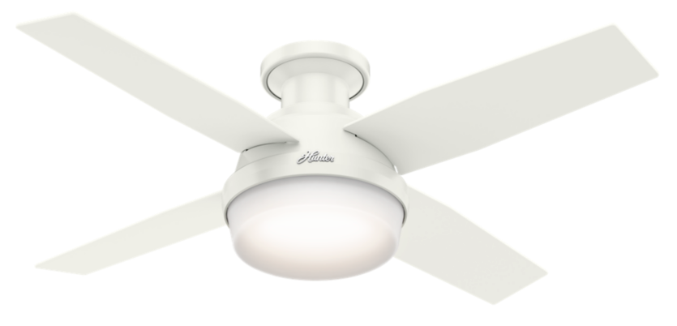
Remote Control
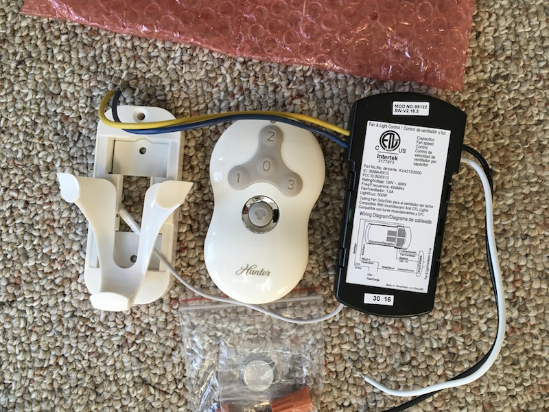
Top of Fan
There are 4 wires.
- Green - ground
- White - neutral
- Black - fan hot
- Blue - light hot
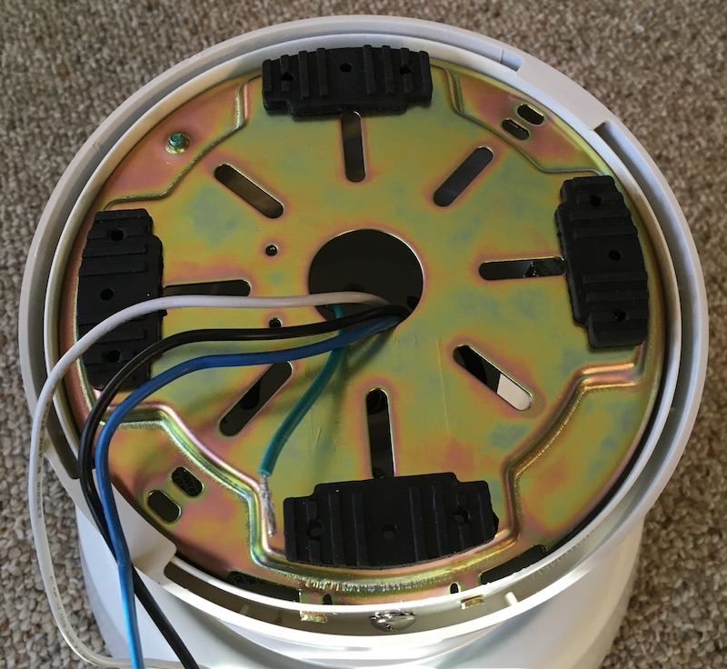
Top of Motor
Same wires minus the ground.
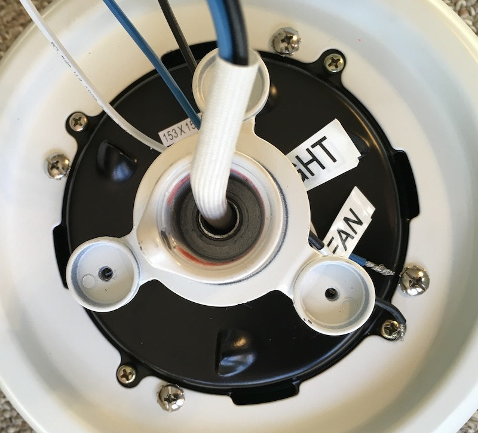
Bottom of Motor
Wires from the top and wires to the motor windings. The upper plate details are shown in the next section.
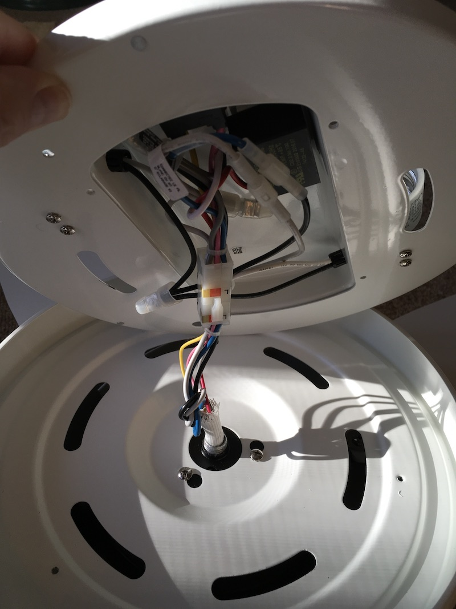

Light Plate
The version without lights probably looks very similar to this minus the bulb wiring. The block at the bottom labelled CBB61 is the capacitor for the start winding; do not remove it.
We also find the reversing switch here which means we can't automate the direction with more control wires. There is enough room here that a wireless circuit and relay could be retrofitted but thats another project!
If one chose to not use the lights that wire could be used to control a relay for direction.
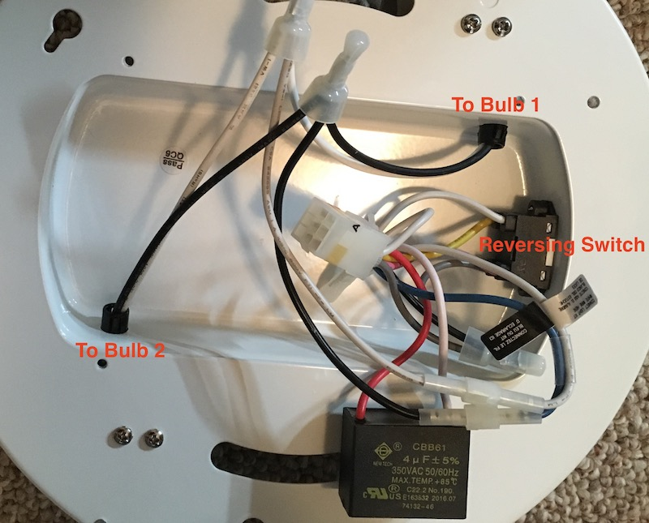
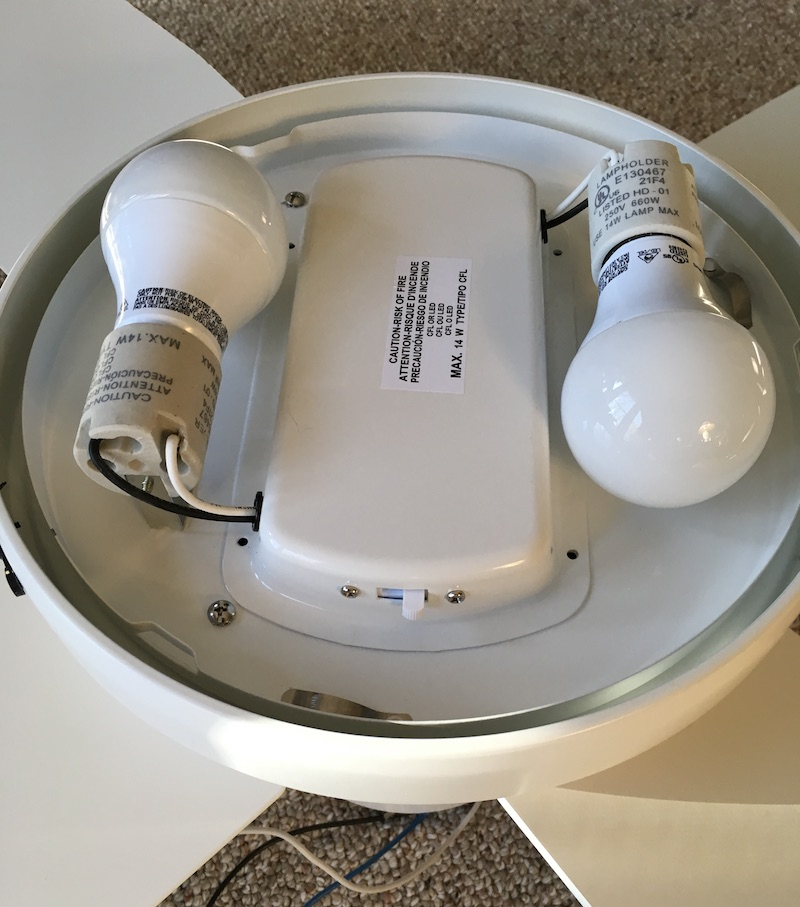

Measuring
Be careful with high voltages!
I used a Kill-A-Watt meter to measure the wattage for the factory config.
| Off | 2-3W |
| Light only | 6W |
| Low fan only | 13W |
| Medium fan only | 30W |
| High fan only | 63W |
Selecting New Control Components
Be careful with high voltages!
The normal method of controlling the speed of this type of motor is inserting a capacitor between the mains hot and the fan. Disassembling the factory control reveals a pair of large capacitors rated at 5uF and 250VAC. This gives a good place to start experimenting with values. In fact, 5-10uF is pretty typical for ceiling fans.
I removed the factory remote control and experimented with the following values using appropriately-rated film capacitors:
| 4.7uF | 9W |
| 6.8uF | 16W |
| 10uF | 27W |
| 12.2uF | 34W |
These results confirm that the factory controller is using 5uF and 10uF for low and medium speeds. (Recall that parallel capacitors are additive.)
It is likely that the minimum factory speed is required to ensure that the motor can start so 10W/5uF will be our minimum. These results don't indicate what the maximum capacitance should be. Further experimentation would be needed if one was interested in a speed somewhere between 30W and 60W. Be cautious that too large a value could cause issues.
If using a different brand of fan it is recommended a similar approach be used to determine the appropriate values.
Capacitors designed specifically for ceiling fan applications are readily available (eBay) in a variety of values. These are of the appropriate type and rating for safe usage in 120VAC circuits. Most of these come with wires attached. For example
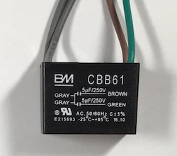
If you know what you are doing and are willing to accept all responsibility for your choice, PCB mounted capacitors are available as well. For example, TDK B32794 series are available from Digi-Key with rating of 300VAC. Be aware that 120V is RMS and not peak voltage (which is ~180V) and it is common practice to use ratings significantly above actual operating levels. Stick with at least 300VAC. Also note that it is very important to realize that AC ratings are quite different from DC ratings. Lesser capacitors often come with DC only ratings. Those that are rated for both have DC values much higher than AC. For example, the TDK parts mentioned are rated for 300VAC and 700VDC. Know what you are doing - you don't want a fire!
At this point one could simply arrange some relays to switch in the appropriate capacitor(s).
Custom Ceiling Fan Control
Be careful with high voltages!
I have designed a circuit and board that allows an automation system to switch in one or more capacitors to control fan speed. You may build one yourself. I've shared the PCB on OSHPark so you can order the PCB directly from them.
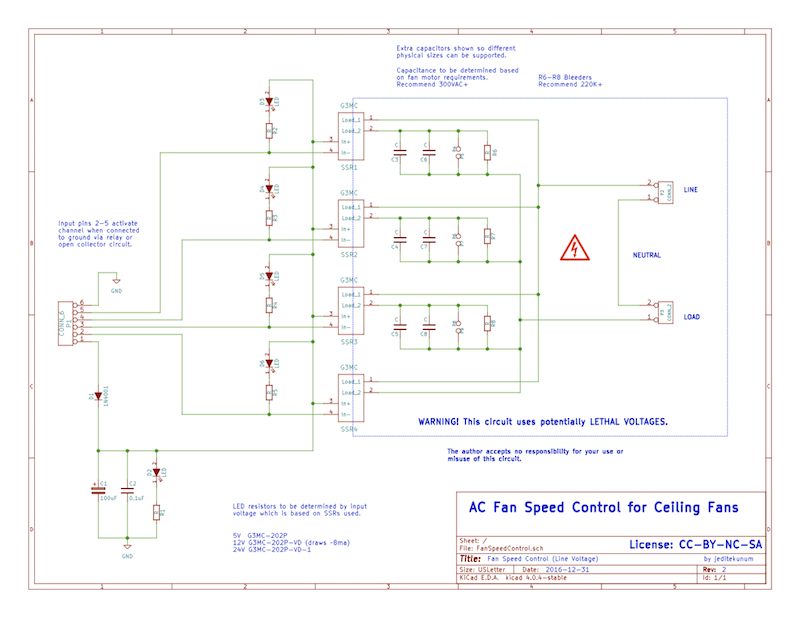
The result looks something like this:
 

The green frame is a DIN mounting carrier. The card is 72mm high and 100mm wide. AC line is connected at the top to the left. The fan is connected at the top to the right. The inner screws are connected together if you want to run your neutral through the board. Grounds must be joined elsewhere. The automation system connects at the bottom.
This is the first "production" board that I will actually install. It is configured for 3 speeds. The empty area around the "3"s could be populated if 4 speeds are desired. Note the multiple holes at both ends of the capacitor area to accommodate different physical sizes. The large pair of holes with lots of copper are for wired fan capacitors discussed earlier.
Instead of relays this design uses SSR (Solid State Relays). They use optical coupling and are therefore isolated.
LEDs and resistors are provided if visual indication is desired.
The resistor values are not specified in the schematic nor are the SSRs. You may use whatever values are appropriate for your situation. In my case I will be connecting to a 12V board so the SSRs are 12V (part G3MC-202P-VD).
To control the board I will connect a 12V power source and pull one or more of pins 2-4 to ground. I've used 2 5uF capacitors so I intend to pull pin 1 for low, pins 1 and 2 for medium, and pin 4 for high.
The PCB is available from OSHPark.
Custom Ceiling Fan Adapter
If you need to integrate the controller above with a 0-10VDC (sourcing) interface such as Loxone, read on.
I have designed a circuit and board that adapts the controller above to 0-10VDC control. You may build one yourself. I've shared the PCB on OSHPark so you can order the PCB directly from them.
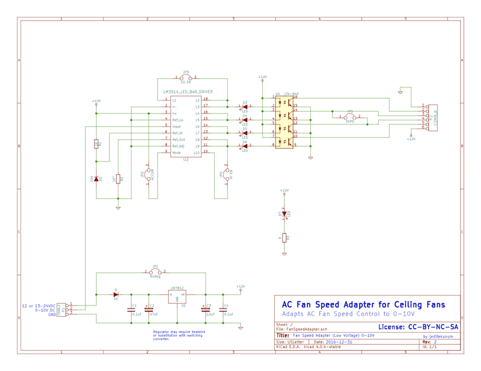
The result looks something like this:
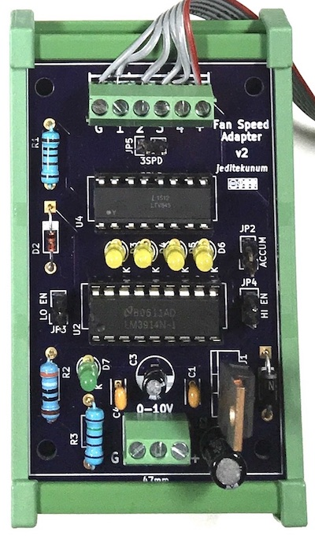
The green frame is a DIN mounting carrier. The card is 72mm high and 47mm wide. The controller is attached at the top. The automation system connects at the bottom via ground, 0-10VDC, and + supply.
Due to the design of the circuit, it requires 12V or greater. You may supply regulated 12VDC directly and jumper the on-board regulator (and don't populate the regulator parts) or you can populate the the regulator parts and supply 13-24VDC. If you use a 7812 regulator be aware that depending on the rest of your choices (ie SSRs and resistors) the load may cause the regulator to become hot. If that is the situation you need to either put a heatsink on the regulator or use a drop-in replacement converter such as Traco TSR 1-24120. My 7812 is too hot so I will be replacing it with a Traco.
There are 4 other jumpers on the board for the following:
- 3SPD - when present there are only 3 speeds possible instead of 4. Speeds 2 & 3 are shorted together.
- LO EN - enable lowest. Without this jumper voltages below ~1V are ignored.
- HI EN - enable highest. Without this jumper voltages above ~9V are ignored if ACCUM jumper is not in place.
- ACCUM - accumulate. Without this jumper only 1 output is selected based on driving voltage. That is, ~4.5V will activate pin 2 but not pin 1. With this jumper any output at or below the driving voltage is activated. That is, ~4.5V will activate pin 1 and pin 2.
The PCB is available directly from OSHPark.